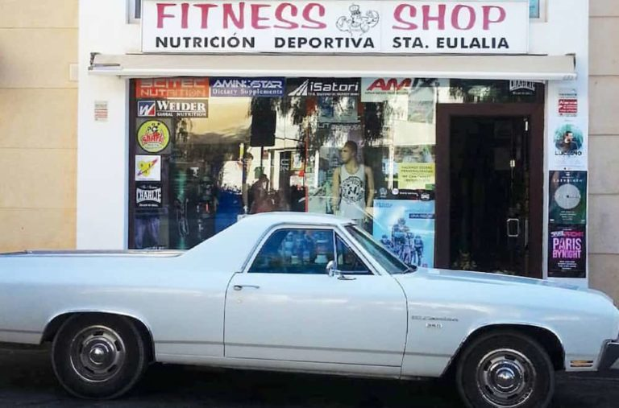

|  |
LA EMPRESA DE ALVARO DAVID QUISBERT
El fitness, tal como lo conocemos hoy en día, parece ser una invención relativamente moderna. Pero el ejercicio físico, obviamente, se remonta mucho más allá de eso, a una época donde la gente no tiene idea de como hacer ejercicio, sino más bien una forma de vida. Hace siglos y milenios, no tenían todas las máquinas y pesas y gimnasios que tenemos hoy en día, y sin embargo, estaban en mejores condiciones que nosotros. Para entender por qué es, cómo llegamos a la cultura un moderno gimnasio, y lo que hemos perdido en el camino, es útil echar un vistazo a la historia del ejercicio.
En un artículo anterior sobre la filosofía de “MovNat,” hablé brevemente sobre la historia de entrenamiento físico antes de que hubiera modernos gimnasios y programas de entrenamiento. Este artículo es una visión general más detallada de ejercicio a lo largo del tiempo, desde sus orígenes ancestrales, a la temprana historia de la educación física en Europa y América, a multitud de hoy de modalidades de fitness, deportes y actividades.
El hombre Primitivo: muévete por tu vida!
Desde los albores de la humanidad a alrededor de 10.000 AC, los hombres tenían una voz constante en la parte posterior de su cabeza diciendo: “Corre por tu vida!” El desarrollo físico siguió un camino natural que fue determinada por las exigencias prácticas de la vida en un paisaje salvaje como así como la necesidad vital para evitar las amenazas y aprovechar las oportunidades de supervivencia.
Una de las demandas de movimiento consistió en la locomoción, la manipulación de las herramientas y los objetos naturales (piedras, ramas de árboles, etc), y la defensa. Para sobrevivir en un ambiente hostil lleno de obstáculos y enemigos naturales y humanos, el hombre primitivo tuvo que saber no sólo cómo correr, sino también caminar, el equilibrio, saltar, gatear, trepar, levantar, cargar, lanzar y atrapar cosas, y luchar. También podemos asumir con seguridad que se mueve lúdicas o creativas como las primeras formas de baile se realizaron cuando los vientres estaban llenos y los depredadores no estaban alrededor.